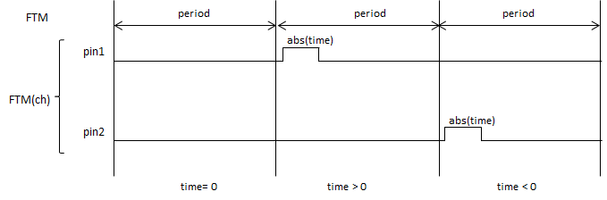

viod hhb.write(unsigned char ch, long time);
指定したチャンネル(ch)からHIGHレベルを出力する時間(time)をマイクロ秒の単位で指定します。時間は -1 * period～periodを指定することができます。
HardwareHBridgeが動作している状態で時間変更を行うためには、hhb.update()またはhsv.update関数で時間情報を更新する必要があります。

設定する多機能タイマー(FTM)の番号を指定します。
0～3が有効です。
HIGHレベルを出力する時間を指定します。時間(time)は -1*periodからperiodの時間まで指定することができます。
値が正の時はpin1端子、負はpin2端子から信号が出力されます。
なし